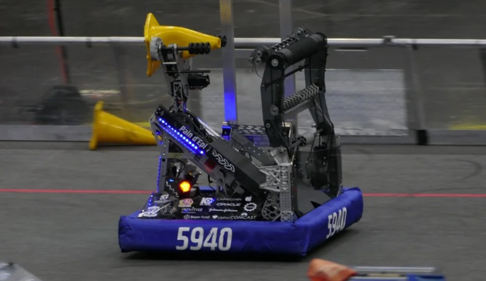
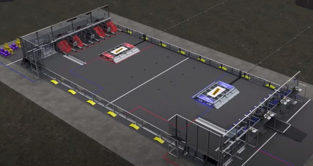
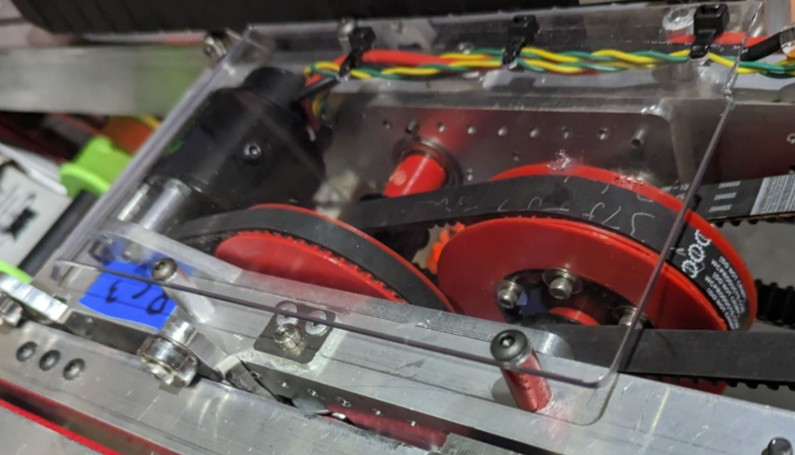
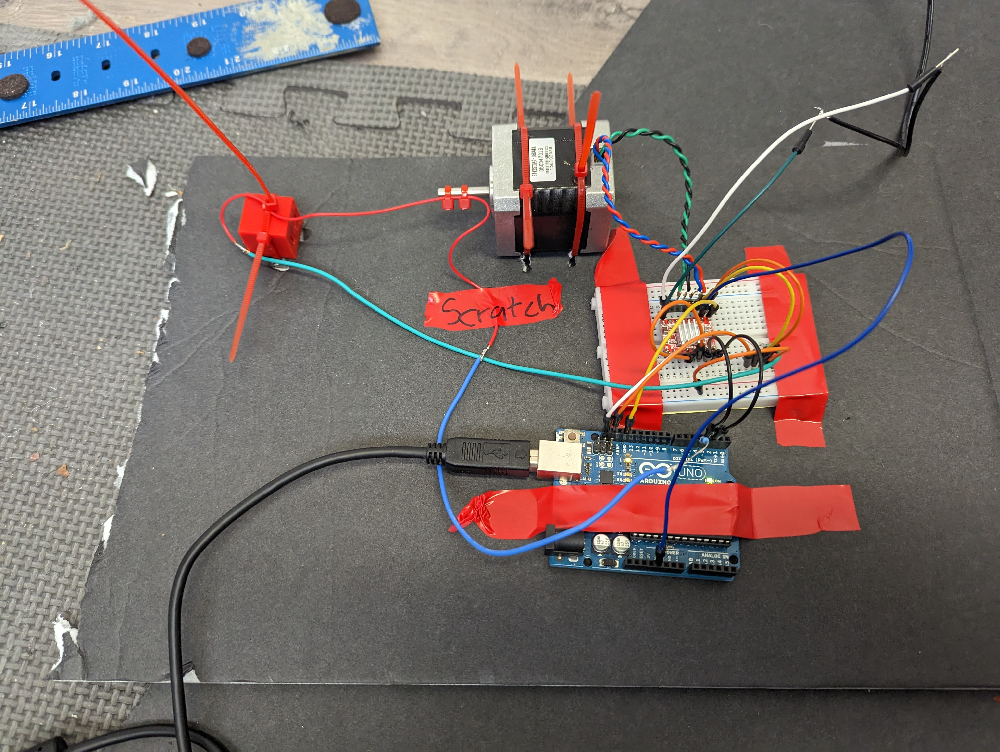
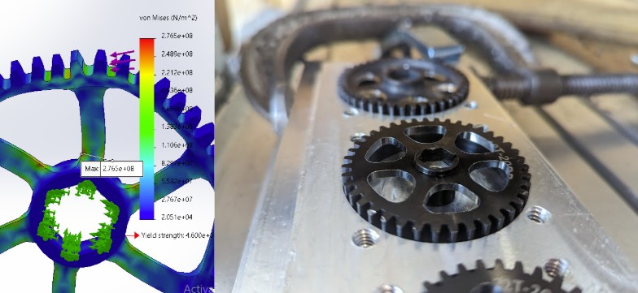
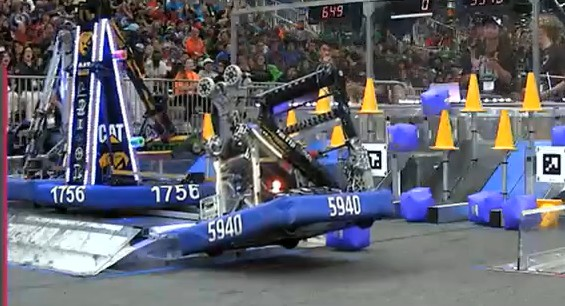
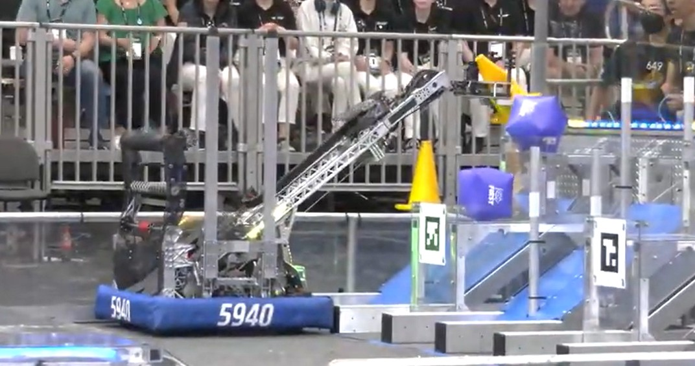

As Technical Captain of FRC Team 5940, I led the design of a low-hysteresis robotic arm using a novel Belt-box drive, validated wire routing to 10,000 torsional cycles, and used FEA to lightweight critical gears — finishing as Curie Division Finalists.
01 — Problem
FRC gives teams 6 weeks to build a robot capable of competing nationally. The 2023 challenge required precise game-piece manipulation at multiple heights — demanding a reliable, high-reach arm.
Two specific problems defined the design: how to transmit power across a rotating joint without hysteresis, and how to run power wires through that pivot without them failing under constant torsional cycling.
"Chain has chordal action — it creates speed pulses as each link engages the sprocket. For a precision arm, that's unacceptable."


02 — Process
Created an evolving slide deck to reason through robot architectures using layout sketches and block CAD. Showed teammates not just what we decided — but why, preventing backtracking.
Designed a compact "Belt-box" gearbox using belts instead of chain to eliminate chordal action. Belts run smoothly at any tooth engagement, giving the arm linear, predictable response.
Built a custom jig that rotated test wires to 10,000 cycles without failure — proving the design's margin of safety before it went on the robot.
Used SOLIDWORKS FEA to simulate stress in swerve gears, identify removable material, and iterate the design. Then machined them on our CNC using a custom aluminum fixture.



03 — Solution
The final robot featured a slanted extension and arm with the Belt-box drive, pivot-routed and validated wiring, and lightweighted CNC-machined swerve gears. Every design decision was documented with its rationale.


04 — Result
The project established a design methodology — architecture documentation, subsystem validation, FEA iteration — that I've carried into every engineering role since.
05 — Key Learning
The architecture decision deck wasn't overhead — it was the mechanism that kept 25 people building in the same direction. Capturing not just what we decided but why prevented backtracking when new information arrived, and made it easy to evaluate proposed changes against stated requirements.
The torsional wire testing was the other key insight: proving subsystem margins before full integration is always cheaper than discovering failures in competition. The jig cost an afternoon to build. Discovering the failure without it would have cost multiple competition matches.